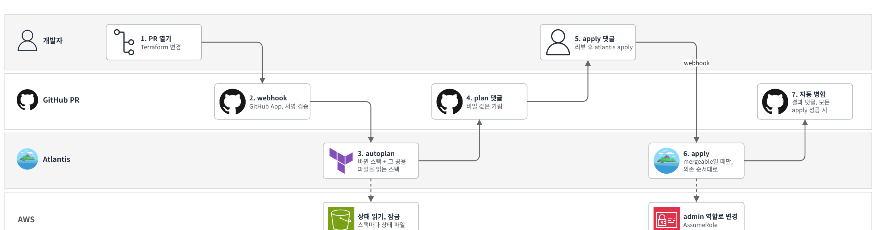
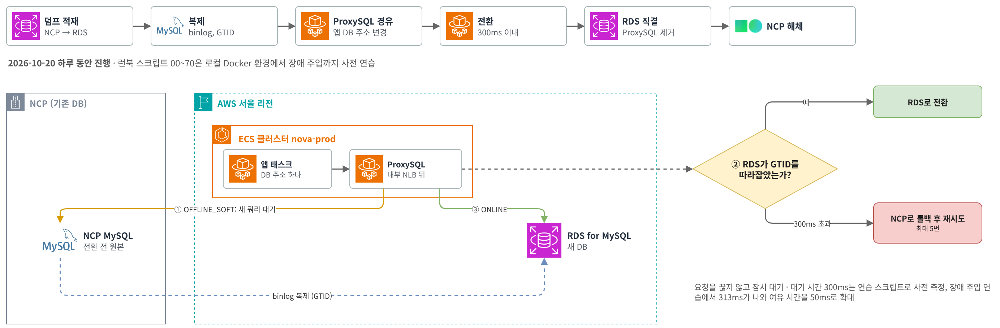
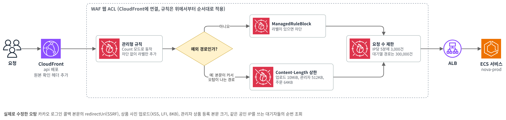
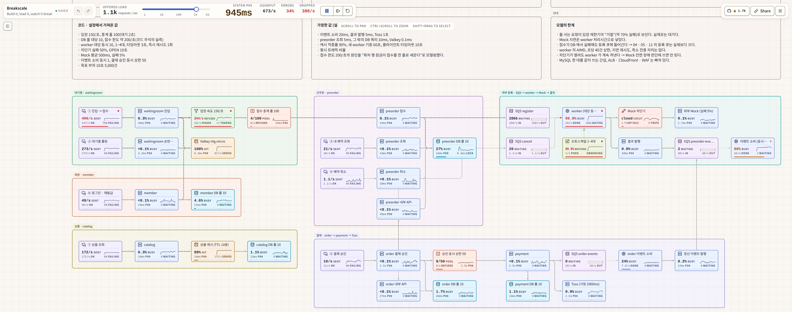
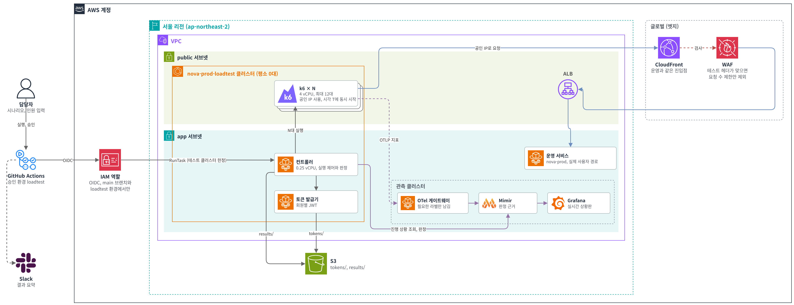
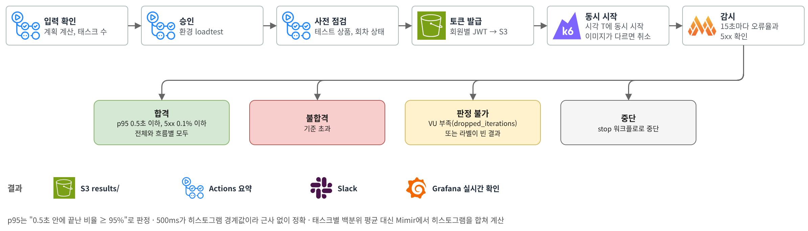

NOVA
인프라 구축과
사전예약 오픈 트래픽을 감당하는 AWS 인프라 구축과 운영 환경 실측 기반의 설정
인프라 담당 · AWS 설계와 구축 · Terraform과 Atlantis · 부하 시험 환경
월 운영비 (목표 구조 추정 대비)
890 → 240 달러
판매 오픈 첫 1분 p95
4.67초 → 30 ms
목차
목차
01
인프라
인프라 개요
02
부하 테스트
테스트 목표와 합격 기준
01
인프라
오픈 시점 트래픽 대응과 월 운영비 약 240달러 유지
1 아키텍처와 기술 스택
2 Terraform과 Atlantis를 이용한 IaC
3 DB 이전과 오토스케일링
4 보안, 관측, 경보
5 비용 절감
01 인프라 · 개요
인프라 개요
구축 기간 (10월 10일 ~ 26일)
17일
PR 190개 병합, 커밋 554개
실행 단위
9 + 1
ECS 서비스 9개와 정해진 시각에 실행되는 배치 1개
Terraform 스택
22개
서비스는 YAML로 정의, 공통 설정은 링크로 공유
AWS 장기 액세스 키
0개
사람, CI, 태스크 모두 IAM 역할로 권한 부여
월 운영비
약 240달러
목표 구조 대비 월 약 650달러 절감
관측
Grafana
로그, 트레이스, 지표, 프로파일을 한 화면에서 조회
변경 절차
PR 생성
→
plan 결과 리뷰
→
Atlantis apply
개인 계정은 읽기 권한만 보유 · 상태 버킷, VPC 등 기반 리소스만 최초 1회 관리자가 직접 적용
01 인프라 · 설계
설계 시 고려한 조건
구분 상황 대응 방법 트래픽
평소에는 요청이 적고, 대기열로 입장 속도 조절, 오픈 전 사전 증설 외부 연동
외부 예약 시스템의 응답 시간 건당 평균 0.5초, 사용자 요청 처리와 분리해 SQS에 적재, 저장소
공개 저장소로 운영 비밀 값은 코드와 상태 파일 어디에도 미보관 인력
인프라 담당 인원 부족 서버 관리가 필요 없는 관리형 서비스 위주로 구성 비용
운영비 최소화 필요 목표 구조는 코드로 모두 구현,
01 인프라 · 아키텍처
전체 아키텍처
01 WAF를 우회하는 경로 차단
모든 요청은 CloudFront와 WAF를 거쳐 ALB로 유입
02 느린 외부 호출은 큐로 분리
서비스 간 호출은 Service Connect 사용
03 앱과 관측 클러스터 분리
앱 배포 권한으로는 관측 스택 변경 불가
04 AZ 2개, 서브넷 3계층
public, app, db 서브넷으로 구분
01 인프라 · 엣지
정적 파일뿐 아니라 API까지 CloudFront + WAF 뒤에 배치
CloudFront는 보통 이미지·정적 파일 캐시용 · NOVA는 캐시하지 않는 API 요청까지 엣지를 먼저 거치도록 구성
일반적인 구성
정적 파일 사용자 → CloudFront → S3
API 사용자 → ALB (+ WAF) → ECS
ALB가 인터넷에 직접 노출 · 트래픽 급증과 공격을 서울 리전의 ALB가 그대로 수용
NOVA 구성
정적 파일 사용자 → CloudFront → S3 캐시 사용
API 사용자 → CloudFront + WAF → ALB (비공개) → ECS 캐시 미사용
ALB 주소가 알려져도 직접 접근 불가 · 모든 API 요청이 엣지에서 먼저 검사·흡수
보안 강화
ALB 은닉, WAF 우회 경로 차단
모든 요청이 WAF를 통과 · ALB 주소가 알려져도 직접 접근 불가
공격 요청을 VPC 밖에서 차단
관리형 규칙 3종, /api/ IP당 5분 3,000회 제한 · 차단된 요청은 ALB, NAT, ECS에 미도달
앱 수정 없이 보안 수준 상향
HSTS 등 보안 헤더 자동 추가 · 사용자 구간 TLS 1.2 이상 강제
트래픽 내성 강화
오픈 순간의 연결 폭주를 엣지가 흡수
TLS 연결은 엣지에서 처리, ALB 구간은 연결 재사용 · ALB의 새 연결 수와 LCU 요금 부담 감소
DDoS 공격의 전 세계 엣지 분산
ALB만 둘 때처럼 서울 2 AZ의 ALB 노드로 공격이 집중되지 않음
추가 비용 거의 없이 성능 향상
HTTP/2·HTTP/3 지원 · ALB → CloudFront 전송 무료 · 월 1TB, 1,000만 요청까지 무료
01 인프라 · IaC
Terraform 스택 구성
AWS 서비스 종류별로 폴더를 나누고 폴더 하나를 스택 하나로 관리 · 스택마다 별도의 상태 파일
영향 범위 축소
plan과 apply가 해당 스택 안에서만 실행
한 방향 의존
스택 간에는 출력값만 참조terraform_remote_state로 참조
상태 잠금
상태 파일은 S3 버킷 하나에 스택별 경로로 저장, 스택마다 잠금 적용
부하 테스트 스택
부하 테스트 리소스는 loadtest 스택 하나에 모아 필요 없을 때 일괄 삭제 가능
01 인프라 · IaC
서비스 정의 방식
서비스 추가 시 Terraform 코드 수정 없음 · 각 스택이 같은 service.yml을 읽어 필요한 리소스 생성
# application/catalog/service.yml
cpu : 1024
memory : 2048
deployment : blue_green
scaling :
min: 2
max: 4
requests_per_task: 1400
routes :
- priority: 50
paths: ["/api/v1/products*", ...]
calls :
...order.base-url: order
...member.base-url: member
db : shop
redis : main
queues :
send: [order-events, preorder-events]
consume: [catalog-events]
파일 하나로 생성되는 리소스 (각 스택이 서비스 목록을 for_each로 순회)
ECR 저장소
IAM 역할
보안 그룹
ECS 서비스
ALB 라우팅 규칙
오토스케일링
배치 일정
앱 설정
서비스별 배포 방식
Blue/Green
catalog · member · order · preorder · waitingroom
Rolling
worker · payment · mock
명시하지 않은 권한은 모두 차단 calls에 적은 대상만, 큐 접근은 queues에 적은 큐만 허용 → 별도 관리 없이 최소 권한 유지SPRING_APPLICATION_JSON으로 운영 값만 덮어쓰기
01 인프라 · IaC
plan 단계 사전 검증
배포 후에야 드러나는 설정 오류를 check, precondition, validation으로 검사해 PR 단계에서 차단
DB 연결 수 예산
서비스별 (최대 태스크 수 × DB 풀 크기)의 합 × 2 (배포 중 두 벌 기동) + 여유분 50 ≤ RDS max_connections
830 / 1,200
0 현재 830 1,200 초과 시 plan 실패
입장 속도와 태스크 수
대기열 최대 입장 속도를 처리할 만큼 preorder를 늘릴 수 없는 설정이면 plan 실패
관측 서버 메모리
컨테이너 메모리 한도의 합이 인스턴스 메모리를 넘으면 실패
service.yml 형식
정의되지 않은 필드, 중복된 ALB 규칙 우선순위, 인프라 예약 이름과 겹치는 비밀 이름 거부
리소스 이름·위치 변경은 moved, import 블록으로 처리해 삭제 후 재생성 방지 · 22개 스택의 fmt와 validate는 상태 파일 접근 없이 일괄 실행해 문법 오류를 PR 전에 확인
01 인프라 · IaC
PR 하나가 AWS에 적용되기까지 (Atlantis)
사람은 plan까지만 · 적용은 리뷰를 거친 PR 댓글로 Atlantis가 · 17일 동안 PR 190개 병합

스택 잠금
PR이 plan한 스택은 다른 PR이 동시에 바꾸지 못함
공용 파일 추적
공용 파일이 바뀌면 그 파일을 읽는 스택까지 자동 plan
적용 순서 고정
VPC, 보안 그룹, DB, ECS 순 0~7단계 · 앞이 실패하면 뒤는 중단
자동 병합
모든 apply가 성공해야 병합 → main과 실제 AWS가 일치
01 인프라 · DB 이전
NCP에서 RDS로 무중단 DB 이전
서비스 중단 없이 하루 만에 이전 · 런북 스크립트(00~70)를 로컬 Docker 환경에서 장애 주입까지 연습한 뒤 운영에 적용

전환 시 요청 대기
300ms
ProxySQL이 요청을 끊지 않고 잠시 보류
장애 주입 연습 결과
313ms
여유 시간을 30ms에서 50ms로 확대
안전장치
RDS read_only 설정
01 인프라 · DB 이전
DB 이전 배경과 효과
이전 배경 ① NCP DB까지 왕복 지연 약 35ms
드라이버 명령마다 왕복 지연 누적 단순 조회 1건 약 370ms
이전 배경 ② 모든 DB 연결이 NAT 경유
부하 증가 시 서비스보다 NAT가 먼저 한계에 도달할 위험
이전 후 정리
이전 당일 ProxySQL, 런북, NCP 스택을 코드에서 삭제RDS 보안 그룹 하나 로 제한
동일 부하(평시의 1/16)에서 상품 목록 요청의 0.5초 이내 응답 비율
점선: 합격 기준 95%
이전 후 1시간 테스트
약 13만 건
전부 0.5초 이내 응답
01 인프라 · 오토스케일링
오토스케일링 개선
대상 추적 정책만 사용할 때는 1분 지표 3회 연속 초과 후에야 반응 → 새 태스크 투입까지 6~10분 소요, 그사이 503 오류 발생
증설 판단 소요 시간
3분 이상 → 1~2분
1분 지표 3회 연속 → 1~2회로 단축
새 태스크의 요청 수신까지
약 30초 → 약 10초
헬스체크 간격 15초 → 5초로 단축
회차 오픈 전: 사전 증설
오픈 15분 전부터 30분 후까지 preorder 앱이 waitingroom과 자신의 최소 태스크 수를 미리 상향
트래픽 급증 직후: 단계 조정
1분 지표 1~2회만 보고 반응
평상시: 대상 추적
CPU와 태스크당 요청 수 기준으로 태스크 수 조정
01 인프라 · 엣지 보안
WAF 구성과 오탐 대응
ALB는 CloudFront를 거친 요청만 받으므로 WAF는 CloudFront에만 적용, ALB의 WAF는 제거

실제 사용 중 발견해 수정한 오탐
카카오 로그인 콜백 상품 사진 업로드 관리자 상품 등록
같은 공인 IP를 쓰는 대기자의 차단을 막기 위해 대기열 경로는 IP당 5분 300,000건 으로 별도 제한
차단 응답 형식 통일
WAF 차단 응답도 앱과 같은 JSON 형식, 한국어 메시지로 반환 → 프런트엔드에서 그대로 표시
공개 PR의 plan 출력에서 원본 확인 헤더 값 노출 발견 → 당일 교체 , 이후 sensitive 지정으로 plan에서 숨김 처리
01 인프라 · 보안
비밀 값과 접근 권한 관리
공개 저장소로 운영하면서도 비밀 값은 코드·상태 파일 어디에도 미보관 · 사람, CI, 태스크 모두 IAM 역할로만 권한 부여
비밀 값 전달 경로
비밀 값 저장 위치: Secrets Manager 한 곳
자체 생성 키
JWT 키, Grafana 관리자 비밀번호
저장소
sops 파일로 커밋
KMS 암호화 · 전용 역할만 복호화
→
Terraform
ephemeral 처리
외부 키는 실행 중에만 복호화상태 파일에 값 미기록
→
Secrets Manager
쓰기 전용 속성으로 저장
Terraform도 값을 다시 읽지 않음
→
ECS
태스크 기동 시 주입
실행 역할은 app/, shared/, db/app/ 경로만 조회
저장소
커밋할 값 없음
코드에는 생성 규칙만 존재
→
개인 계정
읽기 전용 역할
plan까지만 실행
Atlantis
유일한 apply 경로
PR에서 plan 리뷰 후 적용
be 배포
GitHub OIDC
main 브랜치에서만 역할 획득
Grafana
Cognito 로그인
ALB에서 로그인 후 접속
DB 접속
SSH 포트 미개방
bastion은 Session Manager
01 인프라 · 보안
IAM 역할 구성
사람, CI, 애플리케이션 모두 역할을 맡아 임시 자격 증명으로만 접근 · 역할마다 필요한 범위만 허용
0개
AWS 장기 액세스 키
1개
인프라를 바꿀 수 있는 역할
1개
CI가 넘길 수 있는 역할
사람 평소에는 읽기만
평소
nova-readonly
리소스 조회, 로컬 plan
리소스 변경, 비밀 값 조회
비상
BreakGlassAdmin
관리자 권한 (세션 1시간)
MFA 없이 사용 불가
관리자 그룹 외 사용 불가
CI OIDC · Atlantis
인프라 변경
atlantis-grandis-nova-admin
인프라 apply (유일한 경로)
PR plan 리뷰 없이 적용 불가
be 배포
nova-prod-github-deploy
이미지 푸시, 재배포
태스크 정의 변경 불가
main 브랜치 외 발급 불가
애플리케이션 용도별 3단 분리
태스크 실행
nova-prod-ecs-task-execution
이미지 pull, 앱 비밀 조회
운영자·DB 관리자 비밀 조회
마이그레이션
nova-prod-migration-execution
스키마 변경용 DB 계정만 조회
서비스별
nova-prod-<서비스>-task
service.yml에 적은 큐·버킷만
그 외 큐·버킷 접근
비밀 복호화 sops
sops 역할
nova-sops-common / secure
KMS 복호화
Atlantis, 비상 관리자만 사용
읽기 전용 역할 사용 불가
키 분리
앱 비밀과 인프라 자격 증명을 서로 다른 KMS 키로 암호화
01 인프라 · 관측
관측 아키텍처
수집은 Fargate, 저장과 조회는 EC2 1대의 LGTM 스택 · 관리형 서비스 대신 직접 운영
수집 · Fargate
OTel 게이트웨이앱 로그·트레이스·지표 가공
RUM 수집기브라우저 데이터 수신
변환 · Lambda
edge-logs엣지 접근 로그 → OTLP
저장 · obs EC2
Loki · Tempo로그 · 트레이스
Mimir · Pyroscope지표 · 프로파일
조회 · 경보
GrafanaCognito 로그인 후 조회
SNS → ChatbotSlack 경보
01 인프라 · 운영 안정성
장애가 관측 도구까지 번지지 않게 클러스터 분리
앱, 관측, 배포 도구를 서로 다른 ECS 클러스터에 배치 · 클러스터는 무료, 나누는 것은 권한과 영향 범위
nova-prod
앱
앱 서비스 mock 배치 DB 마이그레이션
nova-prod-observability
관측
obs (LGTM) OTel 게이트웨이 RUM 수집기
nova-atlantis
인프라 배포 도구
Atlantis 별도 저장소에서 수동 apply
be CI 배포 역할이 관측 서비스까지 재배포 · 0대 축소 가능
→ 배포 역할은 ecs:cluster = nova-prod 조건으로 앱에만 접근
앱 클러스터를 멈추거나 다시 만들면 관측도 함께 중단
→ 앱 클러스터 작업과 무관하게 관측 유지
일괄 작업마다 "관측은 제외" 를 따로 챙겨야 함
→ 클러스터 단위 작업이 곧 앱 단위 작업
Service Connect 네임스페이스는 공유 · 클러스터가 달라도 앱 → 게이트웨이 통신 유지
01 인프라 · 관측
관측 데이터 수집 구조
앱 코드 수정 없이 로그, 트레이스, 지표, 프로파일을 모아 Grafana 한곳에서 조회
수집 대상
수집·가공
저장 (obs, EC2 1대)
조회·경보
앱 서비스 OTel Java 에이전트
브라우저 Faro SDK (RUM)
CloudFront·ALB 접근 로그 → S3
AWS 리소스 CloudWatch 지표
OTel 게이트웨이 Fargate · 마스킹·샘플링
RUM 수집기 게이트웨이로 전달
edge-logs Lambda OTLP로 변환
Grafana에서 직접 조회
장기 데이터는 S3
로그 Loki 90일
트레이스 Tempo 14일
지표 Mimir 90일
프로파일 Pyroscope 7일
프로파일은 에이전트 확장이 직접 전송
Grafana 대시보드 11개 · 경보 규칙
SNS → Slack 사람이 움직여야 할 때만 알림
코드 수정 없음 · 컨테이너에 에이전트만 붙여 수집
직접 운영 · 관리형 대신 EC2 1대에 LGTM 스택
디스크 고정 · 보존 기간이 늘어도 S3만 증가
01 인프라 · 관측
관측 파이프라인 설계
OTel 게이트웨이 한 곳에서 데이터 보관, 지표 생성, 트레이스 선택, 개인정보 마스킹 처리
앱 · 브라우저 로그 · 트레이스 · 지표
OTel 게이트웨이 (Fargate)
1 수신 큐obs 중단 중 보관
2 APM 지표 생성모든 스팬으로 경로별 요청 수·지연, 서비스 맵
3 트레이스 선택로그는 거치지 않음
4 마스킹이메일 · 전화번호
Mimir 지표
Tempo · Loki 트레이스 · 로그
1 받는 쪽과 저장 분리
15분
obs가 재배포로 멈춰도
2 지표는 샘플링 전에
100% 스팬
샘플링과 무관하게
3 트레이스는 끝난 뒤 선택
10%만 저장
오류와 1초 초과 요청은 전량,
4 저장 전 마스킹
원문 저장 안 함
API로 직접 조회해도
01 인프라 · 관측
경보에서 원인까지 클릭으로 추적
개요 → 서비스 → API → 트레이스 순서로 범위 축소 · 서비스 이름, 경로, exemplar를 누르면 다음 화면
1 개요
어느 서비스가 이상한가
서비스별 요청 · 5xx · 지연 한눈에
서비스 이름 클릭 → 2 서비스 상세
왜 이상한가
오류 코드 · CPU · Valkey · DB 풀
API 경로 클릭 → 3 API 상세
언제부터, 얼마나
응답 코드 · 응답 시간 · 지난주 비교
trace_id 클릭 → 트레이스 (Tempo)
↓ 이 스팬의 로그
로그 (Loki)
↓ 이 스팬의 프로파일
플레임 그래프 (Pyroscope)
4 트레이스 · 로그 · 프로파일
어느 코드에서
요청 하나의 구간별 시간
Slack 경보 → 개요→ 서비스 상세→ API 상세→ 트레이스→ 로그 · 프로파일DB 시간이 크면 MySQL 상위 SQL 대시보드로
01 인프라 · 관측
오픈 상황판
위에서 아래로 1분 단위 확인
01
사용자가 겪은 오류
요청 수, 5xx, 0.5초 초과 요청 비율
↓
02
문제가 생긴 서비스
서비스별 5xx, CPU, 태스크 수를 같은 시간축으로 비교
↓
03
원인
CPU 포화, Valkey 타임아웃, 증설 지연
503 원인 분석 당시 CloudWatch와 로그 검색 결과를 하나씩 확인해야 했던 문제를 계기로 제작 · 대시보드는 모두 파일로 관리
01 인프라 · 관측
업무 지표로 보는 장애
요청 수, 5xx, 지연이 모두 정상이어도 예약이 안 들어오는 장애가 존재 · 업무 결과를 세는 지표로 감지
기술 지표로는 안 보이는 장애
HTTP 200 결제사가 실패를 200 응답으로 반환 결제 실패
HTTP 200 대기열 입장 루프가 멈춰 아무도 구매 단계로 못 감 입장 0명
요청 없음 프런트 배포 실수로 구매 버튼이 API를 호출하지 않음 예약 0건
수집 경로 · 인프라 설정 변경 없음
be Micrometer 카운터 → OTel 에이전트 → Mimir → 업무 대시보드
예: nova_preorder_created_total (결과별), nova_preorder_campaigns_accepting
"nova · 업무" 대시보드에서 보는 것
접수 중인 회차 지금 열린 회차 수
신규 예약 결과별 · 경로별
거절 · 오류 비율 접수 실패 추이
예약 상태별 수 상태 분포
결제 기한 지난 예약 후속 처리 누락
처리 대기 밀린 작업 수
01 인프라 · 관측
브라우저에서 본 사용자 경험 (RUM)
서버에 닿기 전의 실패와 사용자가 실제로 기다린 시간까지 측정 · Grafana Faro SDK
보는 것
웹 바이탈 p75 LCP · INP · CLS, 페이지별
JS 오류 API 호출 전 실패라 서버에는 흔적이 없는 오류
API 체감 시간 브라우저 p95 vs 서버 p95 비교
핵심 동작 소요 시간 동작별 p95 · API 실패
수집 경로
브라우저 Faro → rum 도메인 CloudFront + 전용 WAF
→ ALB → RUM 수집기 (출처 검사) → OTel 게이트웨이
01 인프라 · 경보
경보 정리
경보가 많으면 중요한 경보를 놓치기 쉬움 → 담당자가 실제로 조치해야 하는 경보만 유지
삭제한 경보
314회
21일 동안 314회 울린 ALB 전체 p95 경보
8개
최대 태스크 수 경보와 중복되던 서비스별 CPU 경보
추가·변경한 경보
서비스별 5xx
기존 ALB 5xx 경보는 ALB가 만든 오류만 집계 → 앱이 반환한 503 감지 불가
SLO 오류 예산 소진
응답 시간·가용성은 오류 예산이 빠르게 줄어들 때만 알림
평소 대비 이상
지난 3주 중앙값과 비교
그 밖의 확인 항목
큐 적체와 DLQ
모든 경보는 Slack으로 수신
01 인프라 · 비용
비용 절감
목표 구조는 코드로 모두 구현 · 비용이 큰 항목만 변수로 낮춰 운영 · 트래픽이 늘면 변수 하나로 원복
월 운영비 약 890달러 → 약 240달러
월 절감 약 650달러 (-73%)
계기: 전체 서비스 배포 후
항목
목표 구조 (기존 설계)
현재 운영 (변경)
월 절감 (달러, 추정)
Fargate 용량
서비스마다 온디맨드 1대 + 증설분 Spot
→
전부 Spot
160
RDS
Multi-AZ (대기 인스턴스 포함)
→
단일 AZ (db.t4g.large)
120
Valkey
복제본 + 자동 장애 조치
→
노드 1개
20
NAT
AZ별 NAT Gateway
→
AZ별 NAT 인스턴스 (fck-nat t4g.micro)
70 +처리 요금
VPC 엔드포인트
ECR·Logs·Secrets Manager·SSM 인터페이스형
→
제거, NAT 경유 (S3는 무료 게이트웨이형 유지)
130
Container Insights
켬 (태스크 단위 지표)
→
끔, 무료 AWS/ECS 지표·이벤트 경보로 대체
75
기타 5개
mock 2대 → 1대 preorder 2 vCPU → 1 vCPU Atlantis 전용 ALB → 메인 ALB 공유 엣지 로그 내부 NLB → DNS 레코드 Flow Logs 끔
약 75
02
부하 테스트
판매 오픈 시점 트래픽의 운영 환경 재현과 결과의 인프라 설정 반영
1 테스트 목표와 합격 기준
2 사전 시뮬레이션과 시나리오
3 테스트 환경과 판정 방식
4 판매 오픈 최종 결과
02 부하 테스트 · 목표
테스트 목표와 합격 기준
로컬 측정값만으로는 운영 환경의 CloudFront, WAF, ALB, 오토스케일링, RDS 동작 확인 불가 → 운영 경로로 실제 부하 전송
확인 항목
1
오픈 직후 10초 동안 5,000명 접속
오류 없는 처리 여부
2
태스크 1대의 처리 한계
버틸 수 있는 부하와 증설이 필요한 시점
3
증설 속도
태스크 증가 속도가 트래픽 증가를 따라가는지 여부
합격 기준 (운영 SLO와 동일)
응답 시간
p95 ≤ 0.5초
서버 오류 비율
5xx ≤ 0.1%
전체 기준과 흐름별 기준 모두 충족 시 합격
02 부하 테스트 · 시뮬레이션
사전 시뮬레이션
운영 부하 전송 전, be·인프라·mock의 실제 설정값을 넣은 이산 사건 시뮬레이터(breakscale)로 병목 지점 예측 · 노드 41개, 시나리오 12개, 각 300초

첫 번째 병목: 외부 예약 등록
트래픽이 이어지면 등록 큐 적체 → worker를 큐 적체량 기준으로 증설하는 근거
입장 속도를 초당 300명으로 상향 시
180~199건/초
preorder를 늘려도 접수량 정체 → 회차 행 잠금이 병목이라는 가설
02 부하 테스트 · 시나리오
테스트 시나리오
진입과 접수 5, 주문과 결제 5, 취소 1
시나리오 부하 형태 확인 내용 기본 설정 smoke 테스트 도구와 경로의 정상 동작 초당 2.2흐름, 2분 load 평시 대비 처리 여유 평시의 2배, 30분 spike 판매 오픈 순간의 처리 오픈 1초 후부터 10초간 초당 500건 (5,000명) rush 동시 접속 회원의 결제 진행 spike와 같은 부하, 접수 회원의 50%가 결제 시도 queue 입력 인원 전원의 대기열 통과와 접수 5,000명, 초당 500명 진입 stress 가장 먼저 한계에 도달하는 지점 평시의 1, 2, 4, 6, 8배를 각 5분 soak 4h 장시간 실행 시 자원 누수 평시 수준, 4시간
02 부하 테스트 · 환경
테스트 환경 구성
테스트 리소스는 전용 클러스터에 분리, 평소에는 0대 유지 · 실제 사용자와 같은 경로(CloudFront → WAF → ALB)로 부하 전송

승인 후 실행
GitHub Actions에서 시나리오와 인원 입력 후 승인 시 실행
동시 시작
컨트롤러가 토큰 발급기와 k6 태스크 N대를 띄워 같은 시각에 시작
NAT 미경유
k6만 public 서브넷에서 공인 IP로 전송
온디맨드 사용
테스트 도중 Spot이 회수되면 결과 사용 불가 → Spot 미사용
02 부하 테스트 · 환경
운영 환경 보호 장치
운영 경로로 부하를 보내도 운영 데이터와 경보에는 영향이 없도록 분리
구분 조치 이유 WAF
비밀 헤더가 일치하는 요청만 IP당 요청 수 제한에서 제외 관리형 보안 규칙은 그대로 적용 엣지 로그
User-Agent가 nova-loadtest/<테스트ID>인 로그는 Lambda가 Loki로 미전송 테스트 몇 번으로 로그 저장 한도를 소진하는 상황 방지 지표
k6 지표에 service.namespace=loadtest 지정 운영 SLO 계산에서 제외 권한
승인 환경 loadtest와 main 브랜치에서만 실행 역할 부여 RunTask 권한은 테스트 클러스터로 한정 동시 실행
한 번에 테스트 하나, 최대 6시간 테스트 간 결과 혼선 방지 이미지
시작 전 k6 이미지 digest 비교 서로 다른 이미지가 섞이면 부하 전송 전에 취소
02 부하 테스트 · 판정
결과 판정 방식

히스토그램 합산
k6 태스크별 p95의 평균은 부정확
비율로 판정하는 p95
"0.5초 이내 요청 비율 ≥ 95%" 기준으로 판정
판정 불가
지표 1분 이상 단절, VU 부족으로 계획 요청 미전송, 결과 라벨 누락 시 합격 여부 판정 보류
02 부하 테스트 · 결과
고친 뒤 판매 오픈 첫 1분 합격
오픈 10초에 5,000명 · 대기열부터 결제 시도까지 · 합격 기준 p95 0.5초 이하, 5xx 0.1% 이하
판매 오픈 첫 1분 p95
4.67초 30ms
첫 시험은 불합격
첫 1분 처리량
약 2,090건/초
k6 9대가 같은 시각에 시작
바꾼 인프라 설정
대기열 1 vCPU → 2 vCPU 첫 몰림의 JIT 부담 흡수
회차 오픈 15분 전 사전 증설 대기열 · 사전예약 최소 대수 상향
단계 조정 증설 3분 이상 → 1~2분 1분 지표 1~2회에 반응
헬스체크 약 30초 → 약 10초 새 태스크 투입 단축
상품 조회 최소 2대 · 최대 8대 Spot 회수에도 유지
측정값으로 정한 증설 기준 · 태스크 1대의 분당 요청
서비스 포화 (측정) 증설 기준 대기열 6,000 · CPU 100% 3,500 사전예약 약 2,100 · CPU 84% 1,500 상품 조회 1 vCPU 1.5만~2.5만 2 vCPU · 20,000
서비스 쪽 원인 분석과 코드 개선은 백엔드 발표 자료 4부
향후 개선 과제
향후 개선 과제
인프라
RDS 경보 활성화
CPU, 메모리, 스토리지 경보 코드는 있으나 인스턴스 ID 미입력으로 아직 비활성 상태
Spot 회수 대비
대부분의 서비스가 최소 1대·Spot 구성이라 회수 순간 서비스 공백 발생spot_on_demand_base = 1) 검토
WAF 로그 수집
WAF 로그 미수집으로 차단 원인을 샘플 요청으로만 확인 중
부하 테스트
변경 후 재측정
증설 기준과 태스크 사양 변경 후의 수치를 같은 시나리오로 재측정해 비교 예정
queue 시나리오 재실행
라벨과 VU 계산 수정 후 재실행해 입력 인원 전원의 접수 여부 확인 예정
k6 태스크 수 제한
운영 서비스와 Fargate vCPU 할당량을 공유해 k6는 최대 12대로 제한